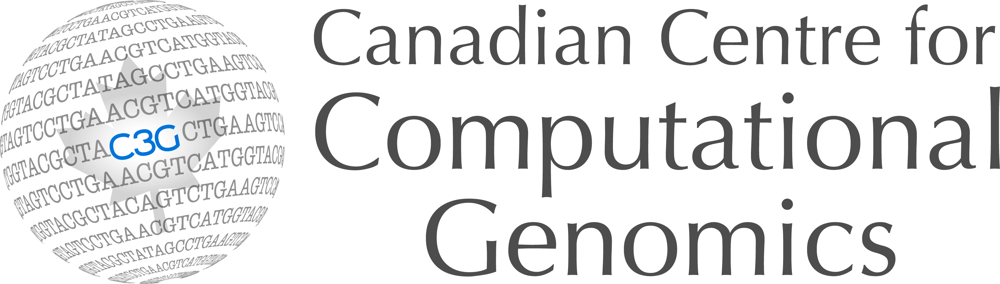

About FORCAST
FORCAST was developed at SickKids Hospital by the Centre for Computation Medicine (CCM) and The Centre for Phenogenomics (TCP). The work was funded by Genome Canada and Ontario Genomics (OGI-137).

FORCAST was developed at SickKids Hospital by the Centre for Computation Medicine (CCM) and The Centre for Phenogenomics (TCP). The work was funded by Genome Canada and Ontario Genomics (OGI-137).